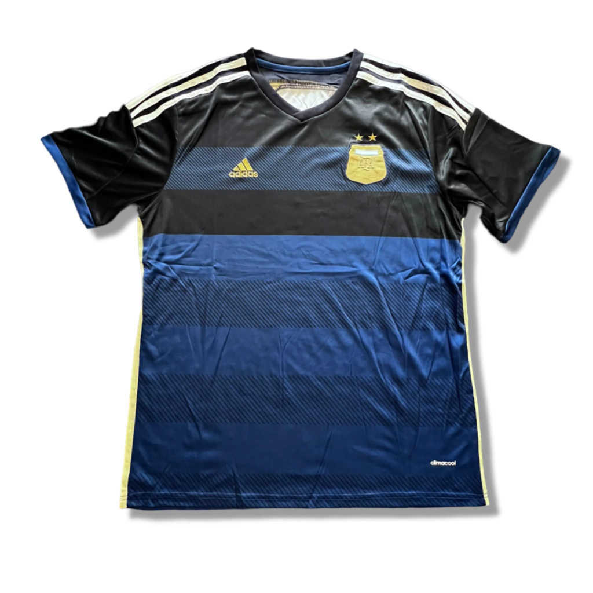
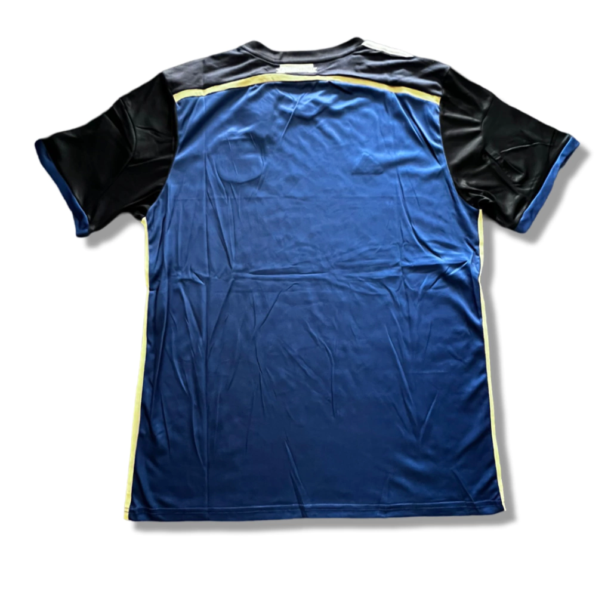
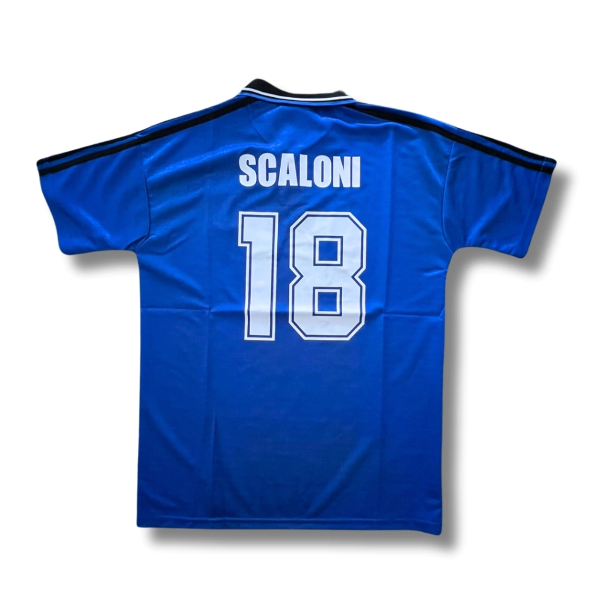
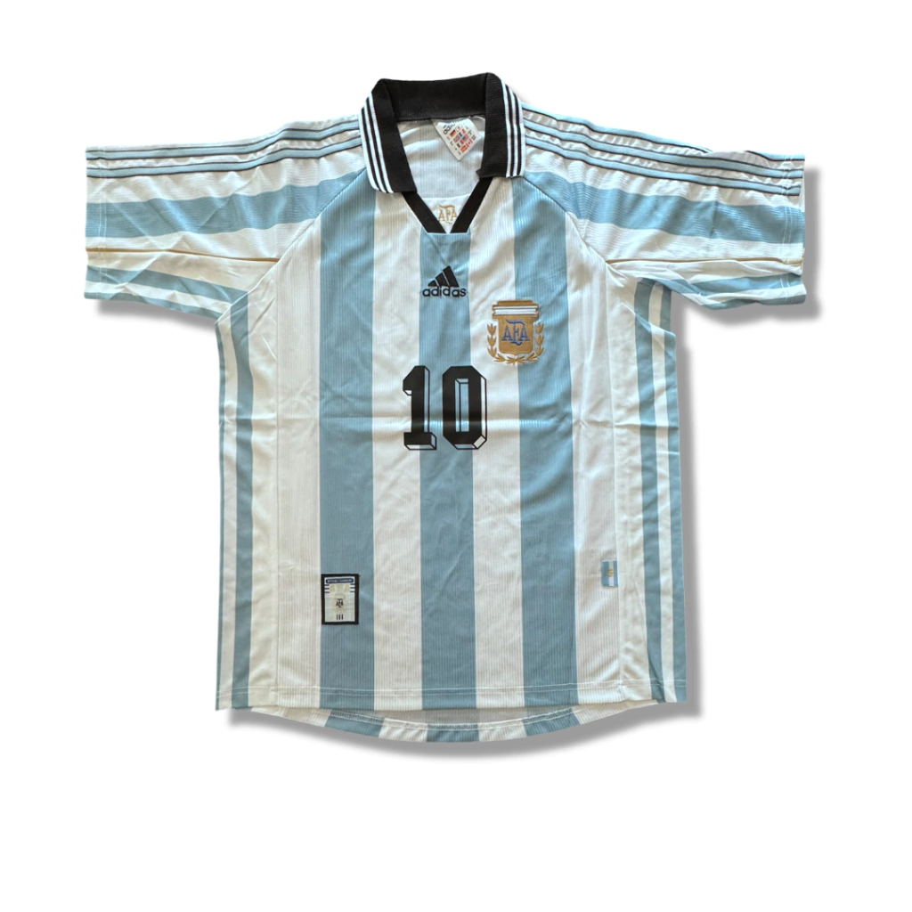
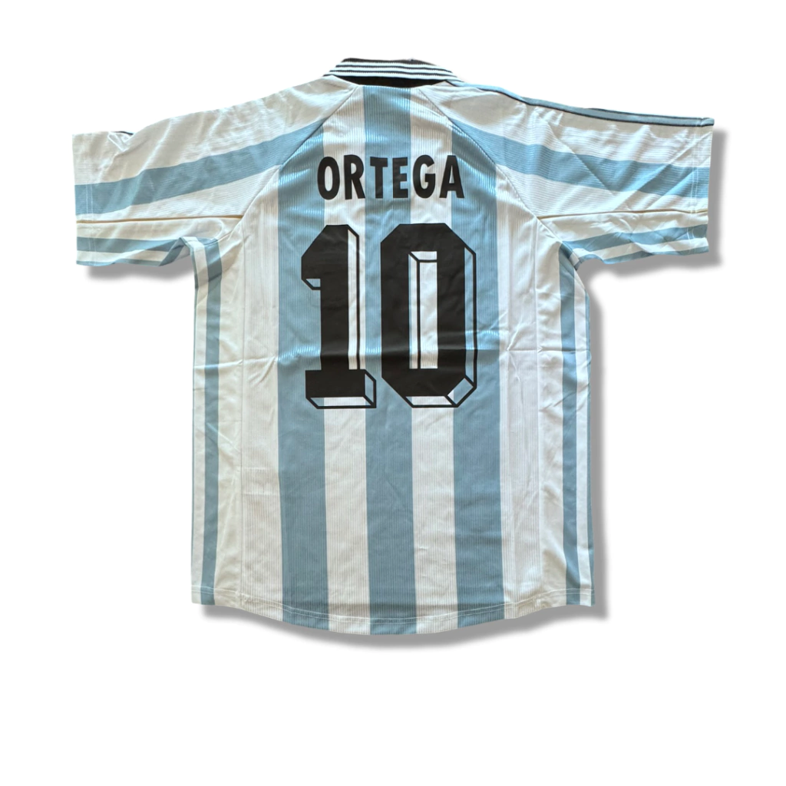
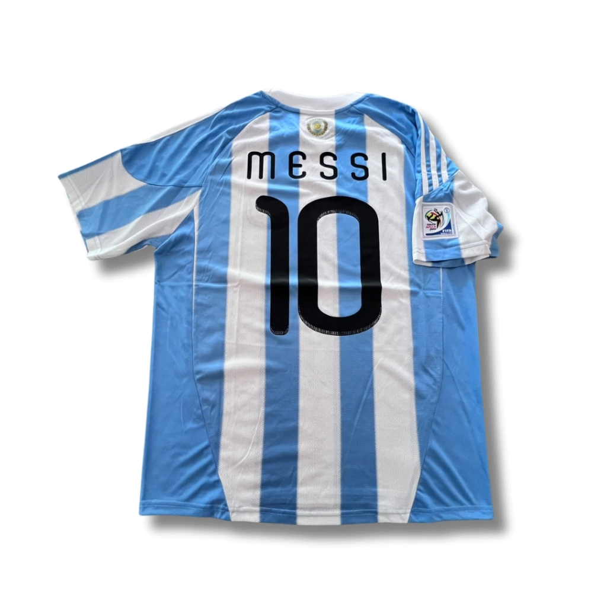

LAS MEJORES CAMISETAS DE LA SELECCION ARGENTINA


Camiseta suplente de la Selección Argentina para la temporada 2014 (Version Jugador).


Camiseta suplente de la Seleccion Argentina para la temporada 1994 (Version Jugador) con el numero 18 de Sacloni.


Camiseta titular de la Seleccion Argentina para la temporada 1998 (Version Jugador) con el numero 10 de Ortega y color oscuro.


Camiseta titular de la Seleccion Argentina para la temporada 2010 (Version Jugador) con el numero 10 de Messi y parche del mundial de Sudafrica.